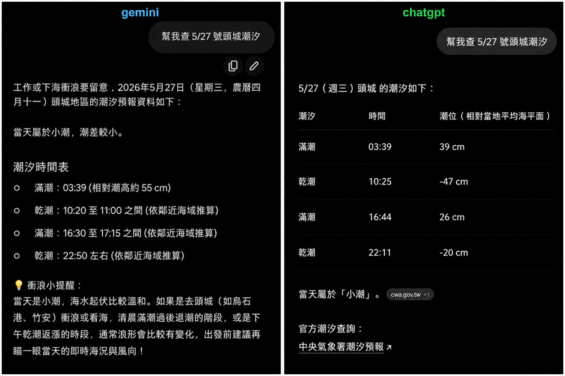

LLM 如何產生答案，以及為什麼會出錯
LLM 以機率生成文字；理解它如何工作、容易在哪裡出錯，才能設計查證與人工覆核。
另一個例子：潮汐查詢中的「看似精準」
潮汐時間與潮位不是只靠一般常識就能回答的資料。它會受到觀測地點、日期、潮汐站、基準面與資料更新影響，因此回答中如果缺少明確來源，就算列出精確到分鐘的時間，也不代表可靠。
案例：同樣查詢「5/27 號頭城潮汐」，截圖中的兩個模型給出了不同的時間與潮位；其中一個回答還加入了天氣與出門提醒。這些內容看起來完整，但必須先確認地點、年份與官方潮汐資料。

可能的幻覺與風險
- 沒有確認「頭城」對應的實際潮汐站。
- 沒有明確指出年份、時區與潮位基準。
- 把推估或一般性提醒寫成像官方預報的精確資料。
- 引用來源標籤不等於真的完成來源核對。
正確的驗證流程
- 確認地點、日期、年份與使用目的。
- 優先開啟中央氣象署等官方潮汐資料。
- 比較潮時、潮位、測站與資料基準是否一致。
- 若要安排出海、釣魚或安全活動，保留人工確認與現場判斷。
管理重點：生活查詢也可能需要外部即時資料。當答案涉及時間、地點、天氣、交通或安全時，AI 應該協助找資料與整理比較，不應取代官方來源與人的最後判斷。